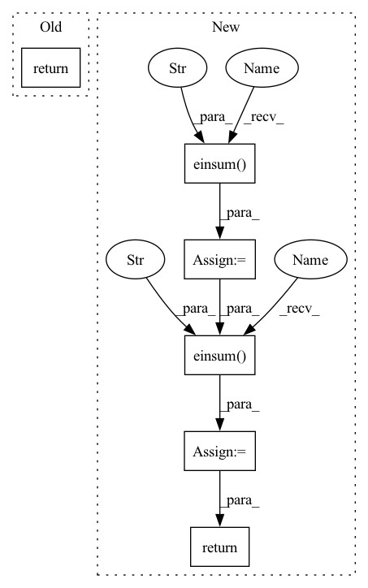

Pattern ID :41235
Before Change
// TODO: extend to more than 2 modalities
m1 = modalities[0]
m2 = modalities[1]
return
class TensorFusion(nn.Module):
// https://github.com/Justin1904/TensorFusionNetworks/blob/master/model.pyAfter Change
elif len(modalities) == 2:
m1 = modalities[0]
m2 = modalities[1]
t1 = torch.einsum("bn, nmd -> bmd" , m1, self.W)
t1 = torch .einsum("bmd, bm -> bd" , t1, m2)
t2 = torch.einsum("bn, nd -> bd", m1, self.U)
t3 = torch.einsum("bm, md -> bd", m2, self.V)
return t1 + t2 + t3 + self.b
// TODO: extend to more than 2 modalities
else:
assert FalseIn pattern: SUPERPATTERN
Frequency: 4
Non-data size: 6
Instances Fragment ID: 116233677
Project Name: pliang279/multibench
Commit Name: c57e40c8b3c267cf815fec92ca687af623828772
Time: 2021-04-14
Author: paul.liangpu@gmail.com
File Name: fusions/common_fusions.py
M Class Name: MultiplicativeInteractions
N Class Name: MultiplicativeInteractions
M Method Name: forward(3)
N Method Name: forward(3)
M Parent Class: nn.Module
N Parent Class: nn.Module
M File Name: fusions/common_fusions.py
N File Name: fusions/common_fusions.py
M Start Line: 71
M End Line: 73
N Start Line: 69
N End Line: 84
Before Change
super().__init__()
def forward(self, x):
return x
After Change
def forward(self, inputs):
b, n, d, e = *inputs.shape, self.num_experts
dispatch_tensor, combine_tensor, loss = self.gate(inputs)
expert_inputs = torch.einsum("bnd,bnec->ebcd" , inputs, dispatch_tensor)
orig_shape = expert_inputs.shape
expert_inputs = expert_inputs.reshape(e, -1, d)
expert_outputs = self.experts(expert_inputs)
expert_outputs = expert_outputs.reshape(*orig_shape)
output = torch.einsum("ebcd,bnec->bnd" , expert_outputs, combine_tensor)
return output, loss * self.loss_coef
Fragment ID: 116233676
Project Name: lucidrains/mixture-of-experts
Commit Name: a48cd5f5b877a2b7d65f5eec21d0b23a5ded2023
Time: 2020-07-16
Author: lucidrains@gmail.com
File Name: mixture_of_experts/mixture_of_experts.py
M Class Name: MoE
N Class Name: MoE
M Method Name: forward(2)
N Method Name: forward(2)
M Parent Class: nn.Module
N Parent Class: nn.Module
M File Name: mixture_of_experts/mixture_of_experts.py
N File Name: mixture_of_experts/mixture_of_experts.py
M Start Line: 10
M End Line: 10
N Start Line: 170
N End Line: 180
Before Change
// TODO: extend to more than 2 modalities
m1 = modalities[0]
m2 = modalities[1]
return
class TensorFusion(nn.Module):
// https://github.com/Justin1904/TensorFusionNetworks/blob/master/model.pyAfter Change
elif len(modalities) == 2:
m1 = modalities[0]
m2 = modalities[1]
t1 = torch.einsum("bn, nmd -> bmd" , m1, self.W)
t1 = torch.einsum("bmd, bm -> bd" , t1, m2)
t2 = torch.einsum("bn, nd -> bd", m1, self.U)
t3 = torch.einsum("bm, md -> bd", m2, self.V)
return t1 + t2 + t3 + self.b
// TODO: extend to more than 2 modalities
else:
assert False Fragment ID: 116233678
Project Name: pliang279/multibench
Commit Name: 80246f6556ca909a261709f9129fa33b82418647
Time: 2021-04-14
Author: paul.liangpu@gmail.com
File Name: fusions/common_fusions.py
M Class Name: MultiplicativeInteractions
N Class Name: MultiplicativeInteractions
M Method Name: forward(3)
N Method Name: forward(3)
M Parent Class: nn.Module
N Parent Class: nn.Module
M File Name: fusions/common_fusions.py
N File Name: fusions/common_fusions.py
M Start Line: 71
M End Line: 73
N Start Line: 69
N End Line: 84
Before Change
def __init__(self):
super().__init__()
def forward(self, x):
return x
class FastSelfAttention(nn.Module):
def __init__(self):After Change
q_kernel = softmax_kernel(q, projection_matrix, is_query = True)
k_kernel = softmax_kernel(k, projection_matrix, is_query = False)
context = torch.einsum("...nd,...ne->...de" , k_kernel, v)
out = torch.einsum("...de,...nd->...ne" , context, q_kernel)
return out
class FastSelfAttention(nn.Module):
def __init__(self, dim, heads = 8, nb_features = 256, redraw_projection = True): Fragment ID: 116233674
Project Name: lucidrains/performer-pytorch
Commit Name: 582e1eb1f6bbb03856d015ca73fbfe6b92a180bf
Time: 2020-10-06
Author: lucidrains@gmail.com
File Name: performer_pytorch/performer_pytorch.py
M Class Name: FastAttention
N Class Name: FastAttention
M Method Name: forward(4)
N Method Name: forward(2)
M Parent Class: nn.Module
N Parent Class: nn.Module
M File Name: performer_pytorch/performer_pytorch.py
N File Name: performer_pytorch/performer_pytorch.py
M Start Line: 52
M End Line: 52
N Start Line: 115
N End Line: 129